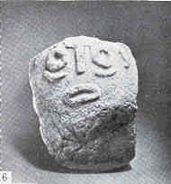

 |
Лепенски Вир, СФРЮ. Каменная скульптура из святилища XLIV. Первый монументальный "портрет". в истории изобразительного искусства. 52 x 33 см. Протонеолит. Первая половина VI тыс. |
ИСТОРИЯ ЕВРОПЫ
с древнейших времен до наших дней
(в восьми томах)
Том первый. Древняя Европа
 Предисловие
к изданию
Предисловие
к изданию 
- Введение
(Е. С. Голубцова, Г. С. Кошеленко)
 Часть первая. ЕВРОПА В КАМЕННОМ И БРОНЗОВОМ ВЕКЕ
Часть первая. ЕВРОПА В КАМЕННОМ И БРОНЗОВОМ ВЕКЕ
- Глава I. Палеолит
и мезолит (В.С. Титов)
- КАМЕННЫЙ ВЕК
- БРОНЗОВЫЙ ВЕК
- Глава II. Неолит
и энеолит (В. С. Титов}
- Глава III. Европа В III
тыс. до н.э. (В. С. Титов)
- Глава IV. Древняя
Европа и индоевропейская проблема (Д. С.
Ваюн)
- Глава V. Европа
во II тыс. до н.э. (Д. С. Титов)
- Иллюстрации
к I части
- РАННИЕ ГОСУДАРСТВЕННЫЕ ОБРАЗОВАНИЯ И ПЛЕМЕННОЙ МИР НА ТЕРРИТОРИИ ЕВРОПЫ
- Введение (Е. М. Штаерман)
- Глава I. Греция
в период формирования раннеклассового
общества (XXX-XII вв. до н. э.) (Т. В. Блаватская)
- Глава II. Ранние
государственные образования на территории Италии и Испании в первой половине I тыс. до н. э.
- Глава III.
Кельты в Европе в первой половине I тыс. до
н.э. (Ю. К. Колосовская. С.В.Шкунаев)
- Глава IV.
Западное и Северное Причерноморье в
эпоху архаики (Ю.Г.Виноградов)
- Иллюстрации
к 1-4 главам II части
- СТАНОВЛЕНИЕ И РАЗВИТИЕ КЛАССИЧЕСКИХ ФОРМ ГОСУДАРСТВЕННОГО УСТРОЙСТВА. ПОЛИС И ЦИВИТАС. ПЛЕМЕННОЙ МИР
- Глава V.
Архаическая Греция
(Ю. В. Андреев)
- Глава VI.
Греция в V в. до н. э. (Д. П. Маринович)
- Глава VII.
Греция в IV в. до н. э. (В. И. Исаева)
- Глава VIII.
Ранняя республика в Риме (V-IV вв.) (И. Л. Маяк)
- Глава IX. Западное
и Северное Причерноморье в классическую
эпоху (Ю. Г. Виноградов)
- Иллюстрации
к 5-9 главам II части
- ЭЛЛИНИСТИЧЕСКИЕ ГОСУДАРСТВА. РИМСКАЯ РЕСПУБЛИКА. ПЛЕМЕННОЙ МИР ЕВРОПЫ
- Глава X.
Греция и Македония в эпоху эллинизма (А. И. Павловская}
- 1. Возникновение державы Александра Македонского
- 2. Образование эллинистических государств
- 3. Восточное Средиземноморье в III в. до н. э. Формирование социально-экономической и политической структуры эллинистических государств
- 4. Обострение социальной борьбы в эллинистических государствах и их завоевание Римом
- 5. Эллинистическая культура
- Глава XI.
Римская республика в III-I вв. (В. М.Смирин)
- Глава XII Племена
Европы до римского завоевания
- Глава XIII. Восточная
Европа. Западное и Северное
Причерноморье в эллинистическую эпоху
- Иллюстрации
к 10-13 главам II части
- Глава XIV.
Расцвет рабовладельческих отношений в
эпоху империи (Е. М. Штаерман)
- Глава XV. Племенной
мир Европы до эпохи Поздней Империи
- Глава XVI.
Эллинские города и государства Западного
и Северного Причерноморья в эпоху
Римской Империи (С. Ю. Сапрыкин)
- Глава XVII. Упадок
римской империи
- Иллюстрации
к 14-17 главам II части
- КРИЗИС И ГИБЕЛЬ АНТИЧНОГО ОБЩЕСТВА
- Заключение.
Роль античного наследия в европейской
культуре (Е. М. Штаерман).
- Литература
- Сокращения
- Хронологическая
таблица
и опубликована на сайте "ИСТОРИЯ РОССИИ" - http://www.tuad.nsk.ru/~history.
Подготовка электронного текста книги завершена в апреле 2002 г.